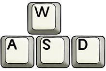

You must accept the HIT before you can submit the results.
Step 1:
Find the point of Image A by zooming with your mouse wheel or the zoom slider and reach the zoom level x8.
Zoom, pan and click on the right image (Image B), not the left one.
Step 2:
Set the new position of the point by double clicking its position on Image B.
Step 3:
Made the final adjustments using the  keys and press Space to confirm it.
Congratulations!
You have completed this task. Now you can submit the results using the form below.